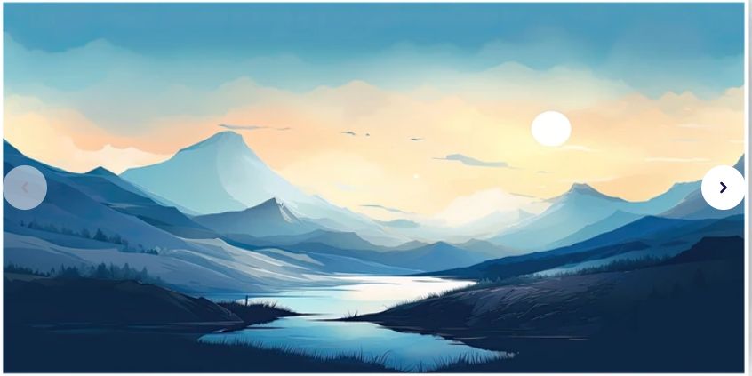

Experiment 2 - Living Impressions
Description
This project offers a generative, living impression of this inspiring image:
Color: The pallete was all sampled from my reference image above.
I decided that the pallete felt like it was inspiring a dawn of
a new day, so I tried to stick to it as best I could.
Primitives: The sun and the fog are both rendered using simple ellipses, as there
wasn't too much variation needed to make them both look good.
Polygons: The mountains and the sky are both generated with sine and cosine curves,
using math to add variation.
Composition: Different random seed values create noticeably different mountain ranges
as well as interesting looking skylines.
Life: The skylines have slight variations that change overtime to simulate the movement
of air and moisture to demonstrate how reflection of light changes with moving moisture.
Another life feature is the parallax effect where the position of everything shifts with the
mouse position: the closer an object would be to the viewer in a 3d space, the more it'd move
from the viewer's perspective (sun doesn't move at all, foreground moves the most). The interactive drawing
itself is meant to make you feel like you're seeing the sun at dawn on the precipice of a mountain.
Technical
The skyline shapes utilize a Sine function to establish a “control” shape and a cosine function to add more variation
in shape over the course of the picture’s lifetime. The Parallax effect was created using the mouse location multiplied
by a "distance" factor which was then subtracted from each shape's position in the canvas. The mountain range was created
using another sine curve that peaks at either end of the canvas, and then used the random() function to add some nice variation.
The abs() function was made to control just how much each vertex was allowed to change from the curve, with the center vertices
having little to no change and the edges of the canvas being allowed to change the most. The highlights were created using the
stroke() feature of the p5js graphics library.
Reflection
The one thing that I genuinely struggled with at first was trying to get the sine curves to work when graphing
out the vertices for the skyline. I have to thank a couple of my game dev friends, who happen to be alumni of UCSC,
for helping me graph out how I wanted each base curve to look like on desmos, an online graphing calculator. After
the skylines, however, I felt that I went absolutely ham on the PCG features. I felt really crafty for pulling the
absolute function from my memory in order to properly implement the mountain generation.
Even though the parallax effect was present in the example code, to some degree, provided to us by Professor Modes,
I feel very proud of myself for improving it by adding a second dimension to it as well as building on top of the existing
x-axis parallax. I really love 3D rendering so I tried my best to sell the illusion of standing in a 3D space the best I could,
and I feel like it really paid off in the final product, while still maintaining p5’s 2D charm. The only thing I would’ve added,
had time let me, would be to make the stroke weight of the highlights more dynamic with the outline of the mountain vertices’
heights. Overall, I’d say that the effort I put in was maximal.